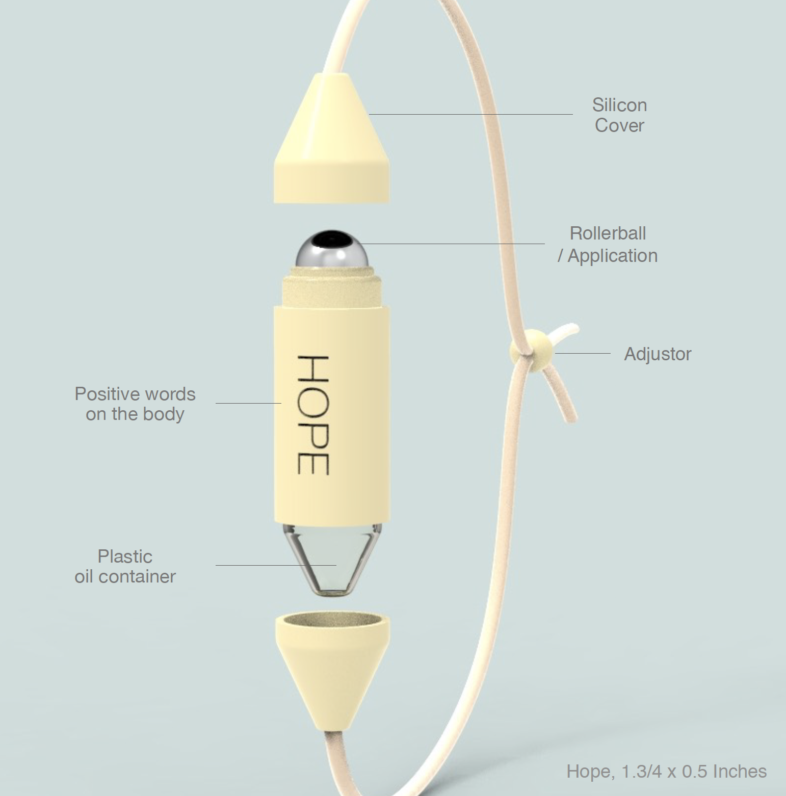
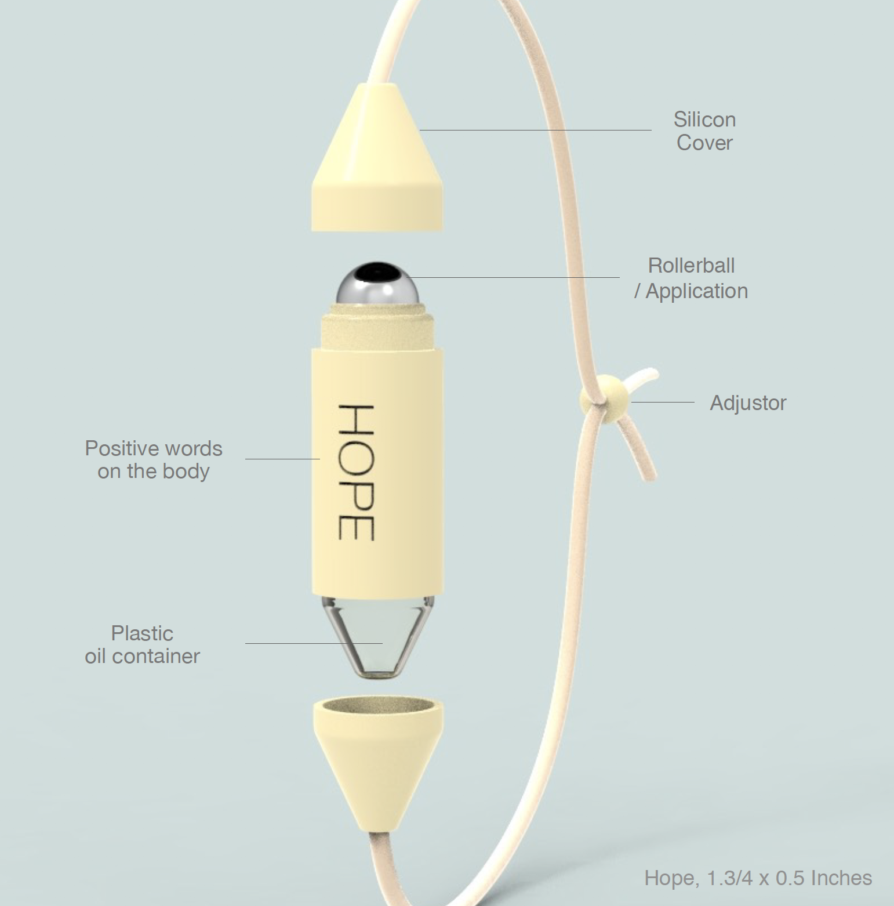

Solar Eclipse: Table Lightings
Research,Ideation,3D Modeling / Rhinoceros 3D / 2020
Product designs for Gantri

This bracelet is designed to provide a sense of mental calm and allow the benefits of aromatherapy to be easily
integrated into daily life. It is created with practical features for those dealing with trauma or psychological
challenges. The bracelet can be worn comfortably throughout the day, and when needed, the lid can be opened to
access the essential oil inside. A small transparent bottle is built into the bracelet, which can be removed and
refilled once the oil is used up.
The rollerball on the bottle allows the oil to be applied easily to delicate areas such as the wrist, behind the
ears, or the bridge of the nose. Additionally, the bracelet is engraved with the words “Hope,” “Love,” and
“Faith,” offering a subtle, positive reminder throughout the day. The base design features calm pastel tones, and
users can choose from a variety of colors to match their mood or personal style.
이 팔찌는 정신적 안정과 아로마 테라피 효과를 일상 속에서 편하게 경험할 수 있도록 디자인되었습니다. 트라우마와
심리적 어려움을 겪는 사람들에게 도움이 될 수 있는 실용적인 기능을 중심으로 제작되었고, 사용자는 하루 동안 팔찌를
편안하게 착용할 수 있으며, 필요할 때 뚜껑을 열어 내부에 담긴 에센셜 오일을 즉시 사용할 수 있습니다.
팔찌 안에는 작은 투명 보틀이 내장되어 있어 오일을 모두 사용한 뒤에는 분리하여 쉽게 리필할 수 있습니다. 보틀의
롤러볼은 손목, 귀 뒤, 콧등 등 섬세한 부위에 오일을 간편하게 바를 수 있도록 설계되었고, 또한 팔찌에는 ‘희망’,
‘사랑’, ‘믿음’이라는 단어가 새겨져 있어 사용자가 일상에서 긍정적인 메시지를 자연스럽게 접할 수 있습니다. 기본
제품은 차분한 파스텔 톤으로 제작되었으며, 사용자의 취향과 기분에 따라 다양한 색상을 선택할 수 있도록 구성했습니다.
 



2017년 9월 20일, 허리케인 마리아가 푸에르토리코를 강타하여, 섬을 파괴하고 340만 거주민 모두를 절망적인 인도주의적 위기에 빠뜨렸습니다.
September 20, 2017, Hurricane Maria struck Puerto Rico, devastating the island and plunging all of its 3.4 million residents into a desperate humanitarian crisis.
허리케인 마리아 이후 푸에르토리코 주민들은 여전히 트라우마에 시달리고 있다.
"이 섬에 사는 사람들은 아직도 외상 후 스트레스와 번영을 경험하고 있다. 그들은 허리케인 이전처럼 심리적으로
일상생활을 하지 않고 있다."
- 실마 퀴뇨네스 박사, 상담심리학자, 푸에르토리코심리학회 회장
After Hurricane Maria, Residents in Puerto Rico are still suffering from trauma.
“People on the island are still experiencing post-traumatic stress and flashbacks. They are not psychologically
going about their daily routines as they did before the hurricane,”
- Silma Quiñones, Ph.D., counseling psychologist and president of the Puerto Rico Psychological Association
사람들은 어떻게 정신 건강이나 트라우마를 회복하는가?
-규칙적인 운동
-관계 유지
-건강 조심해
-자율신경계
How do people recover their mental health or trauma?
-Regular Exercise
-Maintain Relationship
-Take care of your health
-Self-regulate nervous system
푸에르토리코의 재난 상황에서 필요한 제품을 구상하던 중, 우연히 푸에르토리코의 한 여성의 인터뷰를 듣게 되었습니다.
그 여성은 푸에르토리코에서 큰 재난을 겪은 후, 신성한 오일을 들고 다니며 기도로 두려움을 극복한다고 했습니다. 이
이야기를 듣고 큰 영감을 받았고, 저는 종교적 신앙과 심리적 치유를 결합한 제품을 구상하게 되었습니다.
리서치 과정에서, 80%의 푸에르토리코 주민들이 가톨릭 신앙을 갖고 있다는 사실을 알게 되었고, 종교적 신앙이 많은
사람들에게 정신적 충격에 대처하는 중요한 자원으로 사용된다는 점을 확인했습니다.
이 점을 바탕으로 생각을 하다보니, 자연스럽게 신성한 오일을 대신할 수 있는 아로마테라피를 접목시키면 좋겠다는
생각이 들었습니다. 아로마테라피는 심리적 외상 증상 완화에 효과적이라는 연구 결과가 있으며, 이를 활용하면 종교인과
비종교인 모두에게 유용한 제품을 만들 수 있을 것 같았습니다. 그래서 두 가지 요소를 결합하여, 정신적 안정을 돕는
제품을 구상하게 되었습니다.
-종교적 신앙은 큰 질병, 사별, 자연재해 등 다양한 스트레스와 정신적 충격에 대처하는 사람들에게 중요하고 흔하게
사용되는 자원으로 나타났다.
-아로마테라피는 신체적, 정신적, 정서적 복지를 향상시키기 위해 기름을 사용하는 자연 치유 요법이다.
While brainstorming products needed in the aftermath of the disaster in Puerto Rico, I happened to hear an
interview with a woman from Puerto Rico. She shared how, after experiencing a major disaster, she carried a sacred
oil with her and overcame her fears through prayer. I was deeply inspired by this story, and it led me to
conceptualize a product that combines religious faith and psychological healing.
Through my research, I learned that 80% of the people in Puerto Rico are Catholic, and that religious faith is an
important resource for many in coping with mental trauma.
Building on this, the idea naturally came to me to incorporate aromatherapy as an alternative to the sacred oil.
Aromatherapy has been shown to be effective in alleviating psychological trauma, and I thought that by
incorporating it, I could create a product that would benefit both religious and non-religious individuals. Thus,
I combined these two elements to design a product aimed at promoting mental well-being and providing emotional
stability.
- Religion / Faith : Religiousness and spirituality have been shown to be important and commonly used resources for people coping with a variety of stressful and traumatic experiences, including major illnesses, bereavement, and natural disasters.
- Aromatherapy : Aromatherapy is a natural healing therapy using oils to improve physical, mental, and emotional wellbeing.
1.3/4 x 0.5 Inches
This bracelet is designed to support the user’s mental well-being by providing aromatherapy benefits. It features
a small, transparent plastic bottle that can hold essential oils, allowing users to easily refill it once the oil
is used up. The rollerball applicator allows for easy application of oil to areas such as the wrist, behind the
ears, and around the nostrils, providing a convenient way to experience aromatherapy and promote emotional
stability anytime and anywhere.
Engraved with words like ‘Hope’, ‘Love’, and ‘Faith’, the bracelet helps users maintain a positive mindset. The
light pastel colors of the bracelet create a calming and uplifting atmosphere, and with a variety of color
options available, users can choose a style that suits their personal preference.
This product can be used under the guidance of professionals in settings such as counseling centers, disaster
relief organizations, and schools. After receiving proper training, it can also be conveniently used in daily
life, whether at home or at work. The bracelet plays an important role in instilling a sense of peace and hope in
the user’s life.
이 팔찌는 사용자의 정신적 안정을 돕는 기능을 갖춘 제품으로, 아로마 테라피 효과를 제공합니다. 팔찌 안에는 에센셜
오일을 담을 수 있는 작은 투명 플라스틱 병이 내장되어 있으며, 오일이 소진된 후에도 간편하게 리필할 수 있습니다.
롤러볼을 이용해 손목, 귀 뒤, 콧구멍 등 원하는 부위에 오일을 쉽게 바를 수 있어, 언제 어디서나 아로마 테라피를 통해
마음의 안정을 취할 수 있습니다.
팔찌에는 '희망', '사랑', '믿음' 등의 단어가 새겨져 있어, 사용자가 긍정적인 마음을 유지할 수 있도록 돕습니다.
또한, 밝은 파스텔 색상은 차분하면서도 긍정적인 분위기를 제공합니다. 다양한 색상 옵션을 통해 사용자는 자신의
취향에 맞는 스타일을 선택할 수 있습니다.
이 제품은 심리상담센터, 재난구호 단체, 학교 등에서 전문가의 지도 하에 사용될 수 있으며, 교육 후에는 집이나 직장
등 일상 생활에서 편리하게 사용할 수 있습니다. 팔찌는 사용자의 마음에 안정과 희망을 불어넣는 중요한 역할을 합니다.
This bracelet is designed with more vibrant, active colors to suit children and teenagers. It can be used in
schools or counseling centers under the guidance of parents and teachers to help children manage emotions such as
anxiety and fear. For users who find wearing a bracelet uncomfortable, a necklace version of the product can also
be recommended.
In the design process, care was taken to ensure that the product doesn’t feel like a medical device, so that
children and teenagers wouldn’t reject it. The bracelet offers emotional support and helps with emotional
regulation, while being discreet and easy to wear in everyday life.
이 팔찌는 어린이와 청소년을 위해 보다 활동적인 색상으로 디자인되었습니다. 팔찌는 학교나 심리상담소에서 부모와
교사의 지도 하에 자녀가 불안, 공포 등 감정을 관리하는 방법을 배우는 데 유용하게 활용될 수 있습니다. 또한, 팔찌
착용에 불편함이 있는 사용자에게는 목걸이형 제품도 추천할 수 있습니다.
디자인 과정에서, 어린이와 청소년이 의학적 제품에 대한 거부감을 느끼지 않도록 신경 썼습니다. 팔찌는 심리적 안정과
감정 관리를 돕는 기능을 제공하면서도, 일상에서 자연스럽게 착용할 수 있도록 배려하였습니다.

Product designs for Gantri

Pattern design